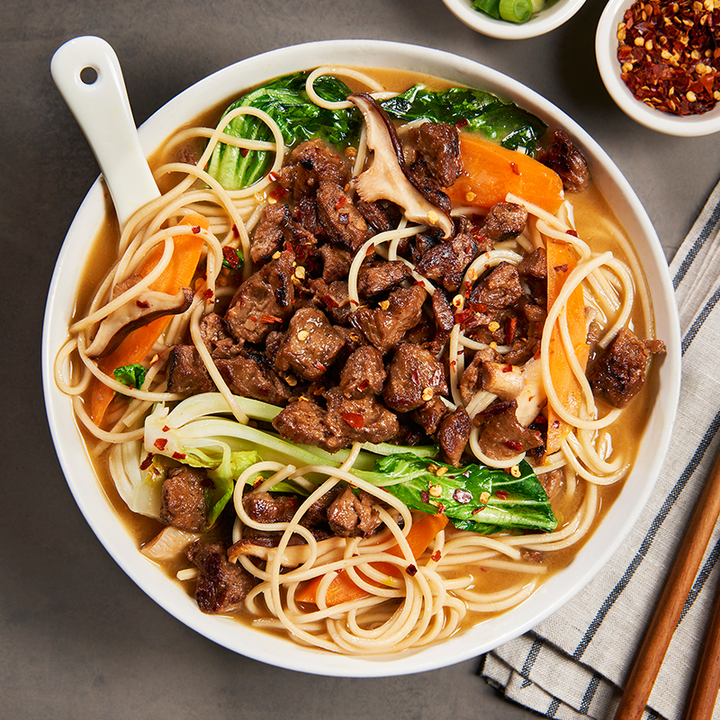

Home
Beef Miso Ramen

Description
Beef Miso Ramen is a savory Japanese noodle soup with a
rich, umami-packed broth made from miso, often paired with tender slices
of beef. The dish features chewy ramen noodles, vegetables like bok choy
and mushrooms, and is topped with a soft-boiled egg, green onions, and
sesame seeds for added flavor and texture. It’s a hearty and satisfying
comfort food.
Ingredients
- Beef (sliced thinly)
- Ramen noodles
- Miso paste
- Soy sauce
- Garlic
- Ginger
- Broth (chicken or beef)
- Bok choy or other greens
- Mushrooms (shiitake or button)
- Soft-boiled egg
- Green onions
- Sesame seeds
- Salt
Cooking Directions
-
Prepare the broth: In a pot, combine miso paste, soy sauce, garlic,
ginger, and broth. Bring to a simmer and cook for 10-15 minutes.
-
Cook the noodles: Boil the ramen noodles according to package
instructions, then drain.
-
Cook the beef: Sauté the thinly sliced beef in a pan until cooked
through.
-
Assemble the ramen: Divide cooked noodles into bowls. Pour the hot miso
broth over the noodles.
-
Add toppings: Top with cooked beef, bok choy, mushrooms, a soft-boiled
egg, green onions, and sesame seeds.
- Serve: Enjoy hot!